20 марта, вторник
В роще выспаться не получилось. Сразу после полуночи ее начал опрыскивать трактор. Медленно и планомерно ездил между рядами деревьев, постепенно приближаясь к нам. Палатку мы поставили удачно, трактор бы ее не задел, но перспектива быть опрысканными непонятно чем радовала мало. Несмотря на это я все равно уснул. Андрей полночи вслушивался в шум трактора и ближе к утру, когда шум стал приближаться, разбудил меня. Быстро собрались и выехали, решили позавтракать, а может и покемарить, уже в другом мете. Им оказалось место нашей плановой стоянки. Наверное, зря мы до него не доехали. Тут есть вода, тень от деревьев, столики. . . Заварили себе чайку на бурбуляторе, позавтракали, почистили примерно половину орехов и двинулись дальше.
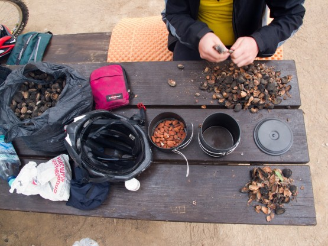
Из мешка неочищенного миндаля получается котелок чистого
Перед Арадом проверили еще одну точку, в которой была отмечена питьевая вода - информация подтвердилась. Кран с водой находился около стоянки автобусов привозящих туристов посмотреть развалины старого города.
Арад город интересный. Был тут уже третий раз и не перестаю удивляться количеству русскоговорящих жителей. Половина всех объявлений на русском, да и просто кругом русская речь. Этот раз не стал исключением. Около первого же супермаркета к нам подошел бывший соотечественник в должности местного дворника и долго разговаривал за жизнь. Пришлось согласиться с ним, что без женщин поход не поход иначе бы не отстал.
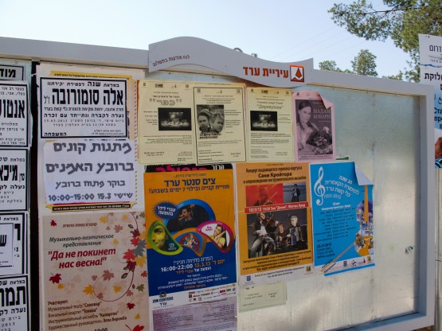
Доска объявлений в Араде
Сразу за Арадом по плану был намечен грунтовый сингл, но Андрею явно не хотелось по нему ехать, и я решил предложить ему спуститься до Масады по асфальту, а сам удалился в пустыню. Сингл оказался не самым простым, узкая тропа, много подъемов и спусков, но ехалось (шлось) нормально и я решил даже взять небольшой бонус в виде очень красивого ущелья образованного ручьем (нахля). В этом месте я пересек трек своего похода 2008 года (ВелоХануки).
Солнце начало клониться к закату, а расстояние до Масады сокращалось очень медленно. Я понимал, что Андрей наверняка уже начал переживать, но ускориться все равно не мог - не шоссе, однако.
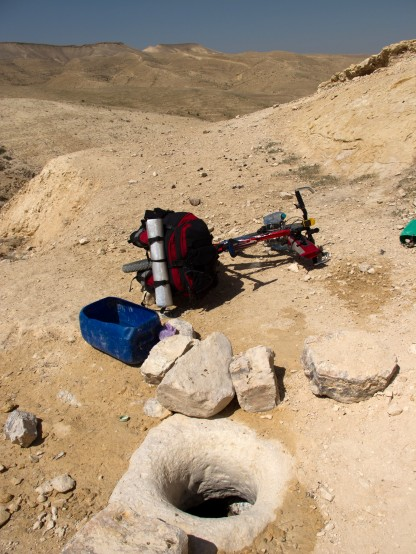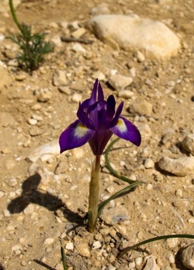
Колодец-накопитель для воды и цветок в пустыне
Маленькая неприятность сильно испортила настроение. Карта памяти на моем фотоаппарате приказала долго жить, а вместе с ней, приличное количество уже сделанных фотографий. Если бы я тогда знал, что все получится восстановить, то, конечно же не переживал бы так.
Естественно фотографий этого участка у меня нет. Хотя там было что снимать. Начиная с короткого, но практически вертикального маале (подъема), где пришлось закидывать велосипед буквально над головой, чтобы поставить его на следующую ступеньку, а потом залазить на нее самому. Вдвоем преодоление этого маале не было бы столь экстремальным, но делать нечего пришлось рисковать.
Затем открылся отличный вид на Масаду и Мертвое море, пришлось и его сохранять только в собственной памяти.
Наконец добрался до Масады. Андрей уже залез на ближайший холм и вглядывался в сторону моего предполагаемого появления. Он успел сходить на экскурсию в крепость, почистить остаток орехов и переделать прочие дела.
Солнце практически село, но мы решили попробовать добраться до Мертвого моря, туда, где нас ждал пляж с душем, и эта перспектива придала новых сил.
Полная темнота застала нас в начале маале Явир. Я, конечно же, предварительно читал у Игоря Скорубского описание этого маале и помнил о бесчисленных полчищах джипов, закончивших свой славный жизненный путь на этом спуске, но уж очень хотелось вниз к морю. Забегая вперед скажу, что я полностью согласен с Андреем, который после спуска охарактеризовал нас редкостными идиотами, так как проехать ночью на груженых ригидах, спуск, который местные ребята на двухподвесах не всегда едут и ничего себе не сломать - большая удача. Справедливости ради нужно заметить, что упали мы буквально по 2-3 раза и без особых последствий (царапины не в счет). Правда восьмерки и яйца на колесах у меня не получилось выправить до конца даже дома.
Как бы там ни было, но мы спустились и даже остались в меру здоровыми. Андрей, по этому поводу, купил пару бутылок пива и мы направились к точке нашей ночевки 2008 года.
Оказалось, что все не так просто. Старого пляжа уже нет, зато появился новый, в 50 метрах от него. Немного покрутились, нашли теневое место и завалились спать прямо на пенках, даже купаться не пошли, вот что значит усталость.
Дневной пробег 65, 5 км, набор высоты 967 метров
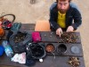 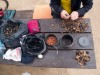 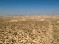 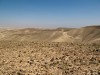 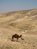 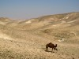 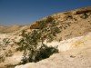 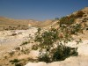 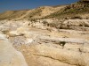 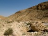 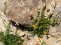 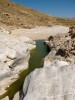 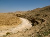  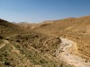 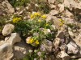 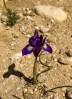 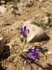 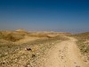 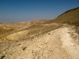 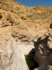 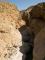 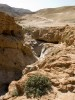 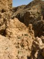 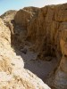 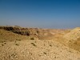 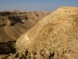 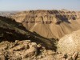 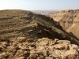 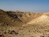 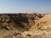 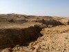 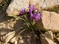 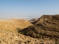 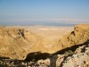 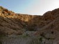 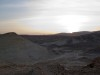 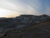 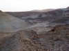
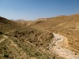 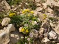 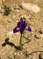 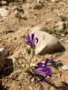 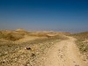 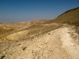 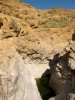 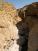 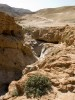 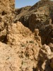 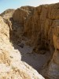 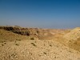 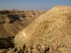 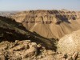 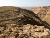 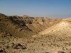 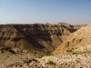 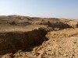 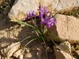 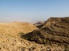 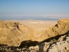 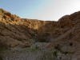 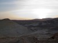 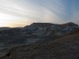 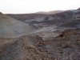
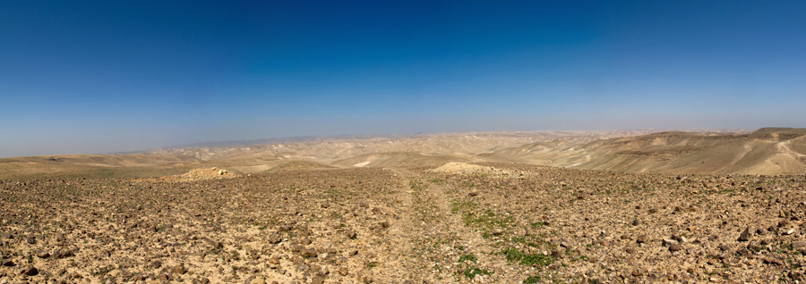
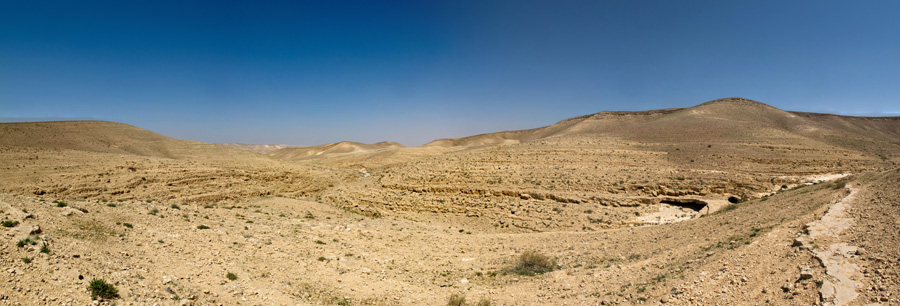
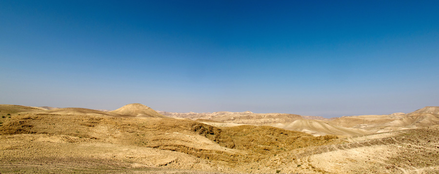
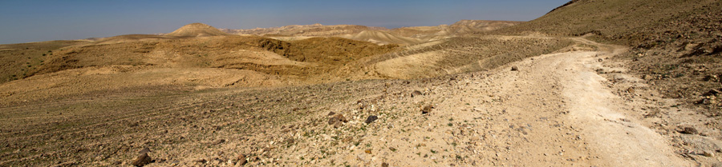
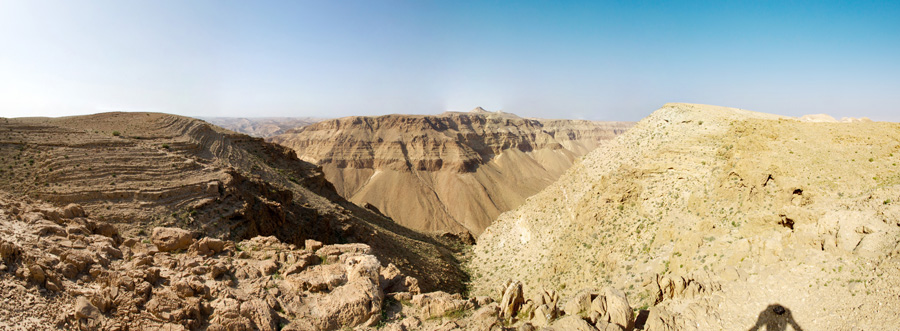
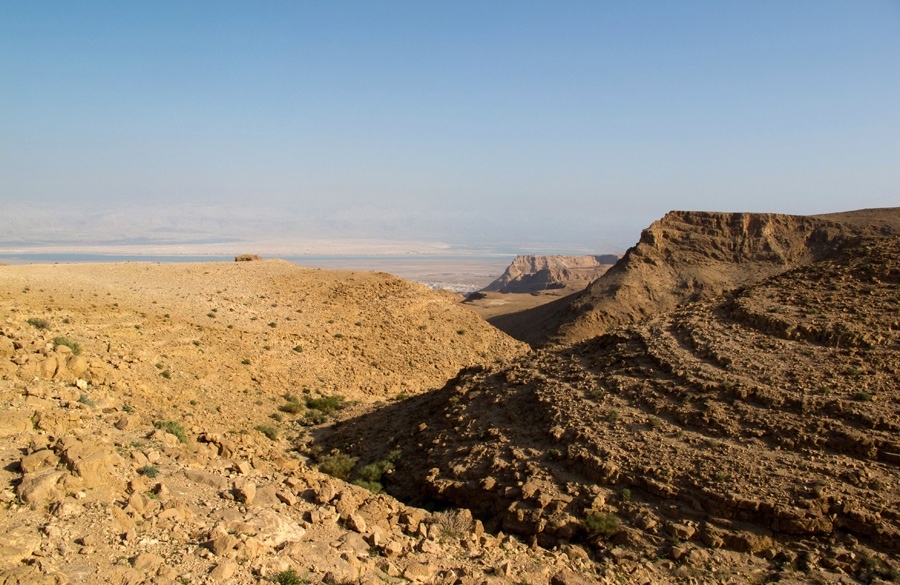